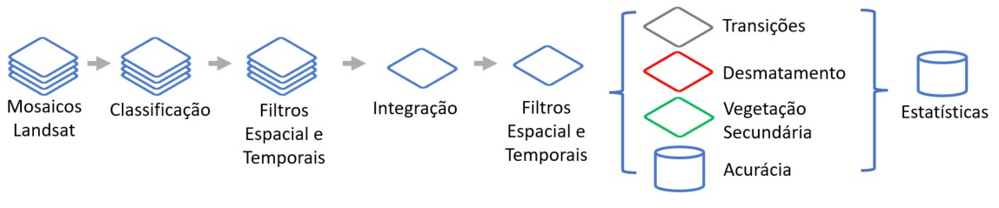

Dinâmica de mudança de cobertura da terra e Diagrama de Sankey
Contabilização das mudanças de quantidade e área de classes de cobertura da terra ao longo do tempo e sua representação através de um Diagrama de Sankey
By Maurício Vancine in Blog
August 27, 2022
Contextualização
A coleção 7 do MapBiomas acaba de ser lançada com grandes melhorias em diversos aspectos e aumentando a janela temporal de 1985 a 2021. O MapBiomas é projeto composto por uma rede colaborativa, formada por ONGs, universidades e startups de tecnologia que produz mapeamentos anuais da cobertura e uso do solo, além de validação e elaboração de relatórios de desmatamento no Brasil.
Os mapas anuais de cobertura da terra são produzidos a partir da classificação pixel a pixel de imagens das satélites Landsat. Todo processo é feito com algoritmos de aprendizagem de máquina através da plataforma Google Earth Engine, descrito nessa figura que surrupiei do site.
 Com toda certeza a parte mais interessante do MapBiomas é a analisar a variabilidade temporal. Pensando nisso, e como tive que escrever um script para ajudar o Francielson Barbosa, uma pessoa que cooriento, que está usando esses dados para entender as dinâmicas da paisagem em duas bacias do Piauí, aproveitei para escrever esse post.
Esses scrits são modificações de um trabalho que estamos submetendo do Vítor Abner Borges Dutra, onde analisamos a dinâmica da paisagem em algumas bacias hidrográficas na Amazônia Oriental no Estado do Pará. Eu achei os resultados muito interessantes que pensei que seria muito legal se outras pessoas pudessem utilizar para analisar sua própria região. Assim que ele ser publicado, eu coloco um link aqui.
Claro, vou fazer tudo no R e para Rio Claro/SP. Vou mostrar duas análises: uma tabela que mostra as mudanças das classes entre dois anos e como representar isso no formato de um Diagrama de Sankey.
Dados
Vamos iniciar instalando e carregando os pacotes.
# packages
# remotes::install_github(c("ropensci/tabulizerjars", "ropensci/tabulizer"), INSTALL_opts = "--no-multiarch")
library(tidyverse)
library(terra)
library(tabulizer)
library(tmap)
library(networkD3)
library(webshot2)
# options
options(timeout = 1e5)
Agora, façamos o download das camadas da versão 7 do MapBiomas.
# download data
download.file(url = "https://storage.googleapis.com/mapbiomas-public/brasil/collection-7/lclu/coverage/brasil_coverage_1985.tif", destfile = "/media/mude/Seagate Expansion Drive/data/mapbiomas_v07/mapbiomas_07_brasil_coverage_1985.tif")
download.file(url = "https://storage.googleapis.com/mapbiomas-public/brasil/collection-7/lclu/coverage/brasil_coverage_2021.tif", destfile = "/media/mude/Seagate Expansion Drive/data/mapbiomas_v07/mapbiomas_07_brasil_coverage_2021.tif")
Vamos também fazer o download da legenda do MapBiomas e preparar esses dados para serem usados em mapas e figuras.
# legend
legend <- tabulizer::extract_tables("https://mapbiomas-br-site.s3.amazonaws.com/C%C3%B3digos_Classes_Legenda_Cole%C3%A7%C3%A3o_7_-__PT__.docx__1_.pdf")[[1]][-(1:3), ] %>%
tibble::as_tibble() %>%
dplyr::slice(-1) |>
dplyr::mutate(legend_pt = stringr::str_trim(stringr::str_replace_all(V1, "[0-9.]", "")),
legend_en = stringr::str_trim(stringr::str_replace_all(V2, "[0-9.]", "")),
number = as.numeric(V3),
color = paste0("#", V4)) %>%
dplyr::select(legend_pt:color)
legend
## # A tibble: 35 × 4
## legend_pt legend_en number color
## <chr> <chr> <dbl> <chr>
## 1 Formação Florestal Forest Formation 3 #006400
## 2 Formação Savânica Savanna Formation 4 #32CD32
## 3 Mangue Mangrove 5 #687537
## 4 Restinga Arborizada Wooded Sandbank Vegetation 49 #6b9932
## 5 Formação Natural não Florestal Non Forest Natural Formation 10 #BBFCAC
## 6 Campo Alagado e Área Pantanosa Wetland 11 #45C2A5
## 7 Formação Campestre Grassland 12 #B8AF4F
## 8 Apicum Hypersaline Tidal Flat 32 #968c46
## 9 Afloramento Rochoso Rocky Outcrop 29 ##FF8C00
## 10 Restinga Herbácea Herbaceous Sandbank Vegetation 50 #66ffcc
## # … with 25 more rows
Vamos também fazer o download do município de Rio Claro/SP.
# rio claro municipality
rc <- geobr::read_municipality(code_muni = 3543907, year = 2020, showProgress = FALSE)
Agora sim, podemos importar os dados para o R (aqui o path do meu HD externo com os dados).
# import data
mapbiomas_1985 <- terra::rast("/media/mude/Seagate Expansion Drive/data/mapbiomas_v07/brasil_coverage_1985.tif")
mapbiomas_2021 <- terra::rast("/media/mude/Seagate Expansion Drive/data/mapbiomas_v07/brasil_coverage_2021.tif")
Fazer essas análises para o Brasil todo é extremamente demorado. Então, vamos analisar para uma área menor, apenas para Rio Claro/SP. Eu notei que na coleção 7 tem alguns pixels com zero. Então, para rodar as análises, vou substituir por NA.
# adjust to rio claro limit
mapbiomas_1985_rc <- mapbiomas_1985 %>%
terra::crop(rc) %>%
terra::mask(rc)
mapbiomas_1985_rc[mapbiomas_1985_rc == 0] <- NA
mapbiomas_2021_rc <- mapbiomas_2021 %>%
terra::crop(rc) %>%
terra::mask(rc)
mapbiomas_2021_rc[mapbiomas_2021_rc == 0] <- NA
Agora vou prepara as legendas dos mapas.
# legends
leg_1985 <- legend |>
dplyr::filter(number %in% freq(mapbiomas_1985_rc)[, 2]) |>
dplyr::arrange(number) |>
dplyr::pull(color)
leg_2021 <- legend |>
dplyr::filter(number %in% freq(mapbiomas_2021_rc)[, 2]) |>
dplyr::arrange(number) |>
dplyr::pull(color)
E por fim, plotar os dois mapas.
map_1985 <- tm_shape(mapbiomas_1985_rc) +
tm_raster(style = "cat", pal = leg_1985, title = "Legenda") +
tm_layout(main.title = "1985",
legend.position = c("left", "bottom"),
legend.title.fontface = "bold")
map_2021 <- tm_shape(mapbiomas_2021_rc) +
tm_raster(style = "cat", pal = leg_2021, title = "Legenda") +
tm_layout(main.title = "2021",
legend.position = c("left", "bottom"),
legend.title.fontface = "bold")
tmap::tmap_arrange(map_1985, map_2021)

Tabela com as mudanças das classes
Com os dados, agora podemos trabalhar nas tabelas de mudanças das classes. Aqui vou fazer três deles: quantidade de pixels, proporção e área. A classe do objeto resultante é xtable, novo para mim e meio chatinho de manipular. Devo fazer atualizações quando tiver tempo sobre essa classe.
# pixel table
table_freq <- addmargins(terra::crosstab(c(mapbiomas_1985_rc, mapbiomas_2021_rc)))
# row and column names
table_rownames_freq_class <- as.numeric(rownames(table_freq)[-length(rownames(table_freq))])
table_colnames_freq_class <- as.numeric(colnames(table_freq)[-length(colnames(table_freq))])
legend_class_rownames <- legend %>%
dplyr::filter(number %in% table_rownames_freq_class) %>%
dplyr::pull(legend_pt)
legend_class_colnames <- legend %>%
dplyr::filter(number %in% table_colnames_freq_class) %>%
dplyr::pull(legend_pt)
rownames(table_freq) <- c(legend_class_rownames, "Soma")
colnames(table_freq) <- c(legend_class_colnames, "Soma")
as.matrix(table_freq)
## brasil_coverage_2021
## brasil_coverage_1985 Formação Florestal Formação Savânica
## Formação Florestal 57854 59
## Formação Savânica 256 501
## Campo Alagado e Área Pantanosa 2023 0
## Formação Campestre 425 15
## Pastagem 0 0
## Cana 4874 709
## Outras Lavouras Temporárias 821 0
## Citrus 20190 16
## Silvicultura (monocultura) 0 0
## Mosaico de Usos 365 0
## Área Urbanizada 0 0
## Mineração 235 0
## Outras Áreas não Vegetadas 7 0
## Rio, Lago e Oceano 0 0
## Soma 87050 1300
## brasil_coverage_2021
## brasil_coverage_1985 Campo Alagado e Área Pantanosa
## Formação Florestal 1926
## Formação Savânica 0
## Campo Alagado e Área Pantanosa 1526
## Formação Campestre 0
## Pastagem 0
## Cana 959
## Outras Lavouras Temporárias 244
## Citrus 677
## Silvicultura (monocultura) 0
## Mosaico de Usos 0
## Área Urbanizada 0
## Mineração 0
## Outras Áreas não Vegetadas 0
## Rio, Lago e Oceano 0
## Soma 5332
## brasil_coverage_2021
## brasil_coverage_1985 Formação Campestre Pastagem Soja Cana
## Formação Florestal 98 0 3367 5259
## Formação Savânica 56 0 403 0
## Campo Alagado e Área Pantanosa 0 0 100 124
## Formação Campestre 839 0 98 7
## Pastagem 0 59 12 1
## Cana 234 58 55204 31798
## Outras Lavouras Temporárias 0 0 3750 56077
## Citrus 214 8 13327 50273
## Silvicultura (monocultura) 0 0 0 0
## Mosaico de Usos 0 0 456 868
## Área Urbanizada 0 0 0 0
## Mineração 31 0 16 0
## Outras Áreas não Vegetadas 0 0 43 567
## Rio, Lago e Oceano 0 0 0 109
## Soma 1472 125 76776 145083
## brasil_coverage_2021
## brasil_coverage_1985 Outras Lavouras Temporárias Café Citrus
## Formação Florestal 15052 691 267
## Formação Savânica 321 0 0
## Campo Alagado e Área Pantanosa 306 0 0
## Formação Campestre 666 0 0
## Pastagem 2 0 0
## Cana 76611 9856 1762
## Outras Lavouras Temporárias 14150 1705 1001
## Citrus 91017 20220 2590
## Silvicultura (monocultura) 2 20427 0
## Mosaico de Usos 2501 3858 459
## Área Urbanizada 0 41 0
## Mineração 888 47 23
## Outras Áreas não Vegetadas 126 0 1
## Rio, Lago e Oceano 119 0 0
## Soma 201761 56845 6103
## brasil_coverage_2021
## brasil_coverage_1985 Outras Lavouras Perenes
## Formação Florestal 42
## Formação Savânica 0
## Campo Alagado e Área Pantanosa 0
## Formação Campestre 0
## Pastagem 0
## Cana 372
## Outras Lavouras Temporárias 1634
## Citrus 1969
## Silvicultura (monocultura) 0
## Mosaico de Usos 207
## Área Urbanizada 2695
## Mineração 69
## Outras Áreas não Vegetadas 1
## Rio, Lago e Oceano 0
## Soma 6989
## brasil_coverage_2021
## brasil_coverage_1985 Silvicultura (monocultura) Mosaico de Usos
## Formação Florestal 11 128
## Formação Savânica 7 0
## Campo Alagado e Área Pantanosa 0 0
## Formação Campestre 9 0
## Pastagem 0 0
## Cana 74 642
## Outras Lavouras Temporárias 45 355
## Citrus 337 2038
## Silvicultura (monocultura) 0 0
## Mosaico de Usos 50 2
## Área Urbanizada 0 0
## Mineração 628 0
## Outras Áreas não Vegetadas 0 0
## Rio, Lago e Oceano 0 0
## Soma 1161 3165
## brasil_coverage_2021
## brasil_coverage_1985 Área Urbanizada Mineração
## Formação Florestal 18 0
## Formação Savânica 0 0
## Campo Alagado e Área Pantanosa 0 0
## Formação Campestre 0 0
## Pastagem 0 0
## Cana 261 16
## Outras Lavouras Temporárias 255 0
## Citrus 374 14
## Silvicultura (monocultura) 0 0
## Mosaico de Usos 0 0
## Área Urbanizada 0 0
## Mineração 0 0
## Outras Áreas não Vegetadas 0 0
## Rio, Lago e Oceano 0 0
## Soma 908 30
## brasil_coverage_2021
## brasil_coverage_1985 Outras Áreas não Vegetadas Rio, Lago e Oceano
## Formação Florestal 1437 80
## Formação Savânica 0 0
## Campo Alagado e Área Pantanosa 126 2
## Formação Campestre 0 0
## Pastagem 0 0
## Cana 1737 194
## Outras Lavouras Temporárias 1810 1
## Citrus 5083 46
## Silvicultura (monocultura) 0 0
## Mosaico de Usos 4 0
## Área Urbanizada 0 0
## Mineração 0 0
## Outras Áreas não Vegetadas 53 0
## Rio, Lago e Oceano 188 0
## Soma 10438 323
## brasil_coverage_2021
## brasil_coverage_1985 Soma
## Formação Florestal 86289
## Formação Savânica 1544
## Campo Alagado e Área Pantanosa 4207
## Formação Campestre 2059
## Pastagem 74
## Cana 185361
## Outras Lavouras Temporárias 81848
## Citrus 208393
## Silvicultura (monocultura) 20429
## Mosaico de Usos 8770
## Área Urbanizada 2736
## Mineração 1937
## Outras Áreas não Vegetadas 798
## Rio, Lago e Oceano 416
## Soma 604861
Agora com essa tabela pronta, podemos calcular a proporção.
# proportion table
table_freq_per <- round(table_freq/sum(freq(mapbiomas_1985_rc)[, 3]), 4) * 100
rownames(table_freq_per) <- c(legend_class_rownames, "Soma")
colnames(table_freq_per) <- c(legend_class_colnames, "Soma")
E fazendo uma pequena gambiarra, calcular a área em hectares.
# area table
area_pixel <- (res(mapbiomas_2021_rc)[1] * 3600 * 30^2)/10000
table_freq_area <- round(table_freq * area_pixel, 1)
rownames(table_freq_area) <- c(legend_class_rownames, "Soma")
colnames(table_freq_area) <- c(legend_class_colnames, "Soma")
Agora podemos exportar essas tabelas.
# export
write.table(table_freq, "content/blog/geo-cob-terra-sankey/table_freq.csv", quote = FALSE, row.names = TRUE, sep = ";", fileEncoding = "UTF-16LE")
write.table(table_freq_per, "content/blog/geo-cob-terra-sankey/table_freq_per.csv", quote = FALSE, row.names = TRUE, sep = ";", fileEncoding = "UTF-16LE")
write.table(table_freq_area, "content/blog/geo-cob-terra-sankey/table_freq_area.csv", quote = FALSE, row.names = TRUE, sep = ";", fileEncoding = "UTF-16LE")
Diagrama de Sankey
Rapaz, te falar, esse não é um código bonito, mas usa uma integração com JavaScript, então me dá um desconto. E mais importante, ele funciona (mais ou menos, tem um erro na parte das cores de cada classe que não consigui resolver, aceito ajuda…). Não vou explicar os detalhes, ainda estou processando…
# sankey plot
# freq
freq <- terra::crosstab(c(mapbiomas_1985_rc, mapbiomas_2021_rc))
# links
link_info <- freq %>%
tibble::as_tibble() %>%
dplyr::mutate(mapbiomas_1985 = as.numeric(brasil_coverage_1985),
mapbiomas_2021 = as.numeric(brasil_coverage_2021)) |>
dplyr::arrange(mapbiomas_1985, mapbiomas_2021) |>
dplyr::select(mapbiomas_1985, mapbiomas_2021, n) |>
dplyr::left_join(legend[, c(3, 1)], by = c("mapbiomas_1985" = "number")) |>
dplyr::rename(mapbiomas_1985_leg = legend_pt) |>
dplyr::left_join(legend[, c(3, 1)], by = c("mapbiomas_2021" = "number")) |>
dplyr::rename(mapbiomas_2021_leg = legend_pt) |>
dplyr::mutate(mapbiomas_1985_leg = paste("1985", mapbiomas_1985_leg),
mapbiomas_2021_leg = paste("2021", mapbiomas_2021_leg))
# nodes
nodes_info <- tibble::tibble(node_name = c(as.character(link_info$mapbiomas_1985_leg),
as.character(link_info$mapbiomas_2021_leg)) %>% unique(),
node_id = 0:(length(unique(c(as.character(link_info$mapbiomas_1985_leg),
as.character(link_info$mapbiomas_2021_leg))))-1),
node_column = c(rep(1, length(unique(as.character(link_info$mapbiomas_1985_leg)))),
rep(2, length(unique(as.character(link_info$mapbiomas_2021_leg))))),
node_group = as.character(c(1:length(unique(as.character(link_info$mapbiomas_1985_leg))),
1:length(unique(as.character(link_info$mapbiomas_2021_leg))))))
# link and nodes
link_info_node_1985 <- link_info |>
dplyr::left_join(nodes_info[, c("node_name", "node_id")], by = c("mapbiomas_1985_leg" = "node_name")) |>
dplyr::rename(source = node_id)
link_info_node_2021 <- link_info |>
dplyr::left_join(nodes_info[, c("node_name", "node_id")], by = c("mapbiomas_2021_leg" = "node_name")) |>
dplyr::rename(target = node_id)
link_info_node <- dplyr::bind_cols(link_info_node_1985, link_info_node_2021[, "target"]) |>
dplyr::select(source, target, n) |>
dplyr::mutate(source = as.numeric(source),
target = as.numeric(target),
n = as.integer(n)) |>
dplyr::arrange(source)
# color scale
cover <- nodes_info |>
dplyr::mutate(node_name = stringr::str_replace(node_name, "1985", ""),
node_name = stringr::str_replace(node_name, "2021", ""),
node_name = stringr::str_trim(node_name)) |>
dplyr::select(node_name)
col <- dplyr::left_join(cover, legend[, c("legend_pt", "color")], by = c("node_name" = "legend_pt")) |>
dplyr::pull(color)
color_scale <- paste0('d3.scaleOrdinal().range([', paste0('"', paste(col, collapse = '", "'),'"'),'])')
# gambiarra
nodes_info$node_group <- col
# sankey plot
sn <- networkD3::sankeyNetwork(Links = link_info_node,
Nodes = nodes_info,
Source = "source",
Target = "target",
Value = "n",
NodeID = "node_name",
NodeGroup = "node_group",
fontSize = 12,
nodeWidth = 25,
colourScale = color_scale)
sn
Esse gráfico vai aparecer na aba Viewer do seu RStudio. Para exportar como algo interativo que você pode abrir no seu brownse de internet ou colocar num site ou usar no RMarkdown ou quanto, exportamos em .html. Caso queira algo fixo, o código mostra como exportar em .png, mas acho que isso pode requerer algumas configurações a mais que não vou entrar em detalhes.
Outra possibilidade é simplesmente usar a opção de Export da aba de Viewer RStudio.
# export .html
networkD3::saveNetwork(sn, "content/blog/geo-sankey/sn.html")
# export .png
webshot2::webshot(url = "/home/mude/data/github/mauriciovancine/apero/content/blog/geo-sankey/sn.html",
file = "/home/mude/data/github/mauriciovancine/apero/content/blog/geo-sankey/sn.png",
vwidth = 1000, vheight = 900)
Fonte da imagem: Zbyněk Skrčený